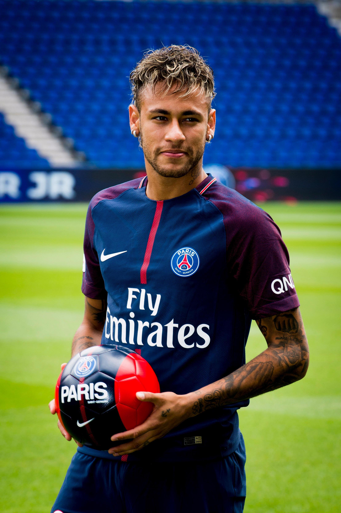

Pedro Dias
futebolista brasileiro que atua como meio-campista ou atacante pelo Santos. Revelado pelo próprio Santos em 2009, desde cedo correspondeu às expectativas e conquistou diversos títulos com o clube. Neymar Jr o jogador mais completo da história